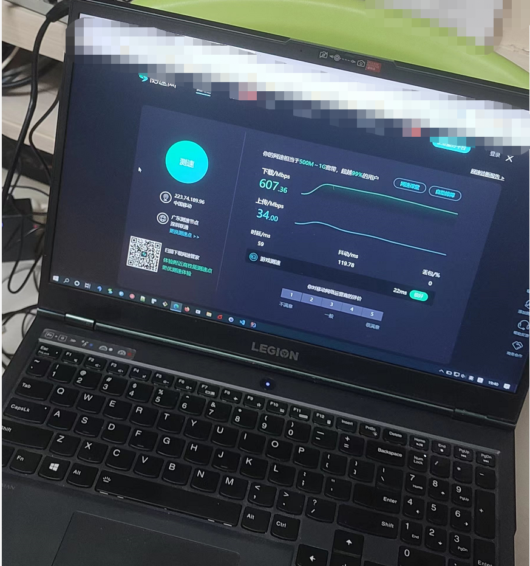

How to Disk Partition Formatted in Openwrt System
How to Disk Partition Formatted in Openwrt System and Improve network performance⌗
如何在openwrt系统下给磁盘分区，并且是给固态硬盘分区
nvme标识最近在在淘宝买回一台小主机2.5g 4个网口的 cpu N5105 intel 赛扬,主要帮提升一下网络性能 升级wifi6，升级家庭网络结构，提升局域网络复制文件速度，同时解决了4k视频播放本地播放传输慢卡顿问题 店主省事帮我安装一openwrt x86系统，（不是arm，不是/dev/sda磁盘标识），没有把128G固态磁盘剩余的空间分区并格式化 导致我收到主机后，登录openwrt系统查看不到剩余空间，开始怀疑是否发错错了，不是128G的，还是64G的？？？ 询问店主后得知没有分区剩下的磁盘空间，所以需要买家自己行解决，如果不是it出生的用户怎么办，想想也是，不是it人员不用这部分空间也 也无所谓
解决分区问题，分三步⌗
1， 检查相关命令，是否有分区命令，没有需要安装，
opkg install fdisk
如果安装好后，使用fdisk -l 命令查看硬盘使用情况，分区情况，以及分区编号
2, 格式化未使用的空间,nvme0n1p1,nvme0n1p2己使用了，创建新分区nvme0n1p3
mkfs.ext3 /dev/nvme0n1p3
3, 挂载分区，使用命令临时挂载，一次性的，需要开机则挂机，则需要添加init.d命令，这里推荐用图形界面挂载比 比较简单,选择UUID,挂载点后点击保存即可
以下是用命令操作分区格式化的过程
root@OpenWrt:~# mount /dev/nvme0n1p3 /data/
mount: mounting /dev/nvme0n1p3 on /data/ failed: Invalid argument
root@OpenWrt:~# mount /dev/nvme0n1p3 /data
mount: mounting /dev/nvme0n1p3 on /data failed: Invalid argument
root@OpenWrt:~# mkf
mkfifo mkfs.ext2 mkfs.ext3 mkfs.ext4 mkfs.f2fs
root@OpenWrt:~# mkf
mkfifo mkfs.ext2 mkfs.ext3 mkfs.ext4 mkfs.f2fs
root@OpenWrt:~# mkfs.ext
-ash: mkfs.ext: not found
root@OpenWrt:~# mkfs.ext3
Usage: mkfs.ext3 [-c|-l filename] [-b block-size] [-C cluster-size]
[-i bytes-per-inode] [-I inode-size] [-J journal-options]
[-G flex-group-size] [-N number-of-inodes] [-d root-directory]
[-m reserved-blocks-percentage] [-o creator-os]
[-g blocks-per-group] [-L volume-label] [-M last-mounted-directory]
[-O feature[,...]] [-r fs-revision] [-E extended-option[,...]]
[-t fs-type] [-T usage-type ] [-U UUID] [-e errors_behavior][-z undo_file]
[-jnqvDFSV] device [blocks-count]
root@OpenWrt:~# mkfs.ext3 /dev/n
net/ nvme0 nvme0n1p1 nvme0n1p2 nvram
null nvme0n1 nvme0n1p128 nvme0n1p3
root@OpenWrt:~# mkfs.ext3 /dev/n
net/ nvme0 nvme0n1p1 nvme0n1p2 nvram
null nvme0n1 nvme0n1p128 nvme0n1p3
root@OpenWrt:~# mkfs.ext3 /dev/nvme0103
mke2fs 1.45.6 (20-Mar-2020)
The file /dev/nvme0103 does not exist and no size was specified.
root@OpenWrt:~# mkfs.ext3 /dev/nvme01p3
mke2fs 1.45.6 (20-Mar-2020)
The file /dev/nvme01p3 does not exist and no size was specified.
root@OpenWrt:~# fdisk -l
Disk /dev/loop0: 83.56 MiB, 87621632 bytes, 171136 sectors
Units: sectors of 1 * 512 = 512 bytes
Sector size (logical/physical): 512 bytes / 512 bytes
I/O size (minimum/optimal): 512 bytes / 512 bytes
Disk /dev/nvme0n1: 119.24 GiB, 128035676160 bytes, 250069680 sectors
Disk model: SK 128GB
Units: sectors of 1 * 512 = 512 bytes
Sector size (logical/physical): 512 bytes / 512 bytes
I/O size (minimum/optimal): 512 bytes / 512 bytes
Disklabel type: gpt
Disk identifier: 45D81ACA-A5B5-7CD0-2928-787DCE37BA00
Device Start End Sectors Size Type
/dev/nvme0n1p1 512 33279 32768 16M Linux filesystem
/dev/nvme0n1p2 33280 360959 327680 160M Linux filesystem
/dev/nvme0n1p3 362496 250069646 249707151 119.1G Linux filesystem
/dev/nvme0n1p128 34 511 478 239K BIOS boot
Partition table entries are not in disk order.
root@OpenWrt:~# mount -l
mount: unrecognized option: l
BusyBox v1.33.2 (2022-01-04 15:52:49 UTC) multi-call binary.
Usage: mount [OPTIONS] [-o OPT] DEVICE NODE
Mount a filesystem. Filesystem autodetection requires /proc.
-a Mount all filesystems in fstab
-i Don't run mount helper
-r Read-only mount
-t FSTYPE[,...] Filesystem type(s)
-O OPT Mount only filesystems with option OPT (-a only)
-o OPT:
loop Ignored (loop devices are autodetected)
[a]sync Writes are [a]synchronous
[no]atime Disable/enable updates to inode access times
[no]diratime Disable/enable atime updates to directories
[no]relatime Disable/enable atime updates relative to modification time
[no]dev (Dis)allow use of special device files
[no]exec (Dis)allow use of executable files
[no]suid (Dis)allow set-user-id-root programs
[r]shared Convert [recursively] to a shared subtree
[r]slave Convert [recursively] to a slave subtree
[r]private Convert [recursively] to a private subtree
[un]bindable Make mount point [un]able to be bind mounted
[r]bind Bind a file or directory [recursively] to another location
move Relocate an existing mount point
remount Remount a mounted filesystem, changing flags
ro Same as -r
There are filesystem-specific -o flags.
root@OpenWrt:~# mount
/dev/root on /rom type squashfs (ro,relatime)
proc on /proc type proc (rw,nosuid,nodev,noexec,noatime)
sysfs on /sys type sysfs (rw,nosuid,nodev,noexec,noatime)
cgroup2 on /sys/fs/cgroup type cgroup2 (rw,nosuid,nodev,noexec,relatime,nsdelegate)
tmpfs on /tmp type tmpfs (rw,nosuid,nodev,noatime)
/dev/loop0 on /overlay type ext4 (rw,noatime)
overlayfs:/overlay on / type overlay (rw,noatime,lowerdir=/,upperdir=/overlay/upper,workdir=/overlay/work)
/dev/nvme0n1p1 on /boot type vfat (rw,noatime,fmask=0022,dmask=0022,codepage=437,iocharset=iso8859-1,shortname=mixed,errors=remount-ro)
/dev/nvme0n1p1 on /boot type vfat (rw,noatime,fmask=0022,dmask=0022,codepage=437,iocharset=iso8859-1,shortname=mixed,errors=remount-ro)
tmpfs on /dev type tmpfs (rw,nosuid,relatime,size=512k,mode=755)
devpts on /dev/pts type devpts (rw,nosuid,noexec,relatime,mode=600,ptmxmode=000)
debugfs on /sys/kernel/debug type debugfs (rw,noatime)
none on /sys/fs/bpf type bpf (rw,nosuid,nodev,noexec,noatime,mode=700)
root@OpenWrt:~# df -h
Filesystem Size Used Available Use% Mounted on
/dev/root 77.0M 77.0M 0 100% /rom
tmpfs 3.8G 6.8M 3.8G 0% /tmp
/dev/loop0 76.9M 3.1M 68.0M 4% /overlay
overlayfs:/overlay 76.9M 3.1M 68.0M 4% /
/dev/nvme0n1p1 16.0M 5.7M 10.2M 36% /boot
/dev/nvme0n1p1 16.0M 5.7M 10.2M 36% /boot
tmpfs 512.0K 0 512.0K 0% /dev
root@OpenWrt:~# mkfs.ext3 /dev/nvme0n1p3
mke2fs 1.45.6 (20-Mar-2020)
Discarding device blocks: done
Creating filesystem with 31213393 4k blocks and 7806976 inodes
Filesystem UUID: ffebbab2-ad4b-48f9-9551-fef3b35abbdf
Superblock backups stored on blocks:
32768, 98304, 163840, 229376, 294912, 819200, 884736, 1605632, 2654208,
4096000, 7962624, 11239424, 20480000, 23887872
Allocating group tables: done
Writing inode tables: done
Creating journal (131072 blocks):
done
Writing superblocks and filesystem accounting information: done
root@OpenWrt:~#
root@OpenWrt:~# mount /dev/nvme0n1p3 /data
root@OpenWrt:~# df -h
Filesystem Size Used Available Use% Mounted on
/dev/root 77.0M 77.0M 0 100% /rom
tmpfs 3.8G 7.0M 3.8G 0% /tmp
/dev/loop0 76.9M 3.1M 68.0M 4% /overlay
overlayfs:/overlay 76.9M 3.1M 68.0M 4% /
/dev/nvme0n1p1 16.0M 5.7M 10.2M 36% /boot
/dev/nvme0n1p1 16.0M 5.7M 10.2M 36% /boot
tmpfs 512.0K 0 512.0K 0% /dev
/dev/nvme0n1p3 116.7G 60.1M 110.7G 0% /data
升级网线，买的号称万兆网线，有点小贵，看材质就不一样⌗

浏览器pc有线测速，家里宽带安装的移动300Mbs⌗

手机wifi测速⌗
主路由器，主要提供拨号，各种插件安装⌗
N5105 4个网口 2.5g
wifi ap路由器，主要提供wifi移动设备连接⌗
AX6000 wifi6